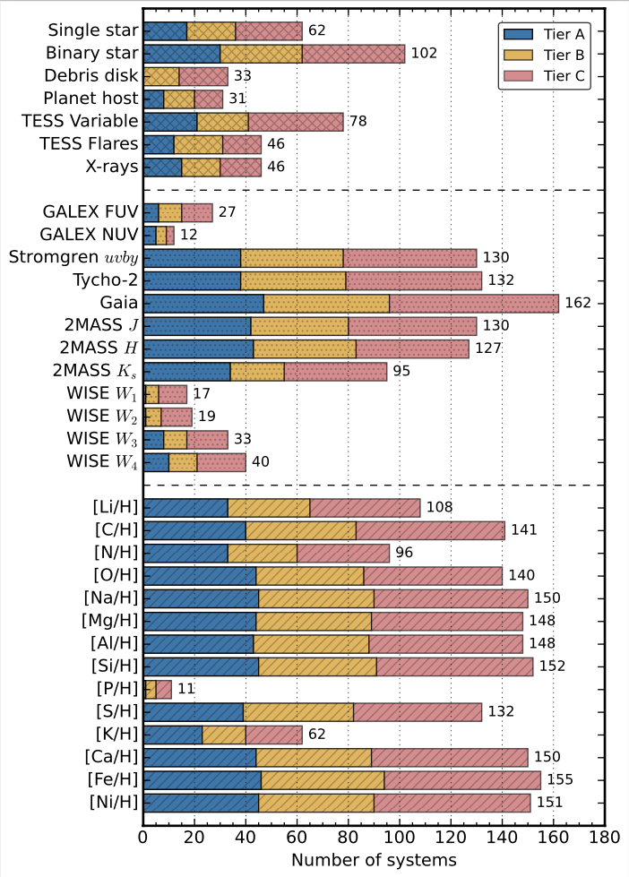

Caleb K. Harada
Precursor Science for the Habitable Worlds Observatory
 Figure 1. H-R diagram
for stars in the ExEP Mission Star List.
The Decadal Survey on Astronomy and Astrophysics 2020 "Pathways to Discovery in Astronomy and Astrophysics" (Astro2020) has
recommended that NASA realize a large IR/O/UV space telescope optimized for high-contrast imaging and spectroscopy of ~25 exo-Earths and transformative general astrophysics. The NASA Exoplanet Exploration Program (ExEP) has subsequently released a
Mission Star List consisting of 164 nearby targets deemed the most accessible to survey for potentially habitable exoplanets with
the Habitable Worlds Observatory (HWO). Precursor studies of promising targets for the future HWO exo-Earth survey are necessary to reduce mission design risk by enabling science and engineering trades that weigh how key design choices and astrophysical realities
impact the yield of potentially habitable planets characterized by HWO. Identifying and characterizing the most promising targets early on in mission development will inform critical mission requirements (e.g., inner/outer working angle, field of regard,
sensitivity, settling time, slew speed, wavelength coverage, etc.) and facilitate target selection later on in the mission design process. I'm working to identify and improve our understanding of the most promising targets for HWO as part of the HWO
Stellar Properties & Observational Reconnaissance for Exoplanet Studies (SPORES) collaboration.
Figure 1. H-R diagram
for stars in the ExEP Mission Star List.
The Decadal Survey on Astronomy and Astrophysics 2020 "Pathways to Discovery in Astronomy and Astrophysics" (Astro2020) has
recommended that NASA realize a large IR/O/UV space telescope optimized for high-contrast imaging and spectroscopy of ~25 exo-Earths and transformative general astrophysics. The NASA Exoplanet Exploration Program (ExEP) has subsequently released a
Mission Star List consisting of 164 nearby targets deemed the most accessible to survey for potentially habitable exoplanets with
the Habitable Worlds Observatory (HWO). Precursor studies of promising targets for the future HWO exo-Earth survey are necessary to reduce mission design risk by enabling science and engineering trades that weigh how key design choices and astrophysical realities
impact the yield of potentially habitable planets characterized by HWO. Identifying and characterizing the most promising targets early on in mission development will inform critical mission requirements (e.g., inner/outer working angle, field of regard,
sensitivity, settling time, slew speed, wavelength coverage, etc.) and facilitate target selection later on in the mission design process. I'm working to identify and improve our understanding of the most promising targets for HWO as part of the HWO
Stellar Properties & Observational Reconnaissance for Exoplanet Studies (SPORES) collaboration.
Synthesizing Knowledge of Promising Targets for HWO
Figure 2. Summary of system parameters compiled in the HWO SPORES Catalog. Figure originally published in Harada et al. (2024). In Harada et al. (2024), we presented a catalog of system properties for the 164 ExEP targets, including 1744 abundance measurements for 14 elements from the Hypatia Catalog and 924 photometry measurements spanning from 151.6 nm to 22 μm in the GALEX, Strömgren, Tycho, Gaia, 2MASS, and WISE bandpasses. We independently derived stellar properties for these systems by modeling their spectral energy distributions with Bayesian model averaging. Additionally, we identified TESS flare rates for 46 stars, optical variability for 78 stars, and X-ray emission for 46 stars in our sample. We also discuss the catalog in the context of planet habitability and draw attention to key gaps in our knowledge where precursor science can help to inform HWO mission design trade studies in the near future. Notably, only 33 of the 164 stars in our sample have reliable space-based UV measurements, and only 40 have a mid-IR measurement. We also find that phosphorus, a bio-essential element, has only been measured in 11 of these stars, motivating future abundance surveys. Our catalog is publicly available and we advocate for its use in future studies of promising HWO targets.